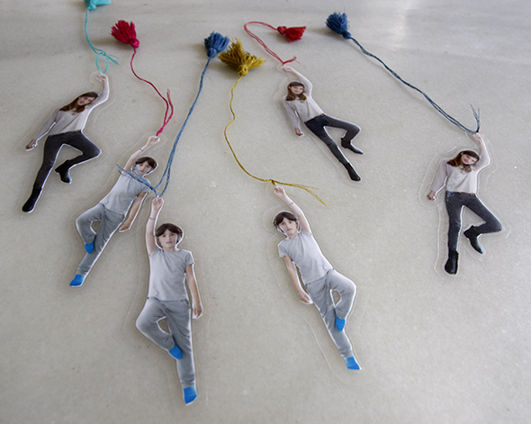
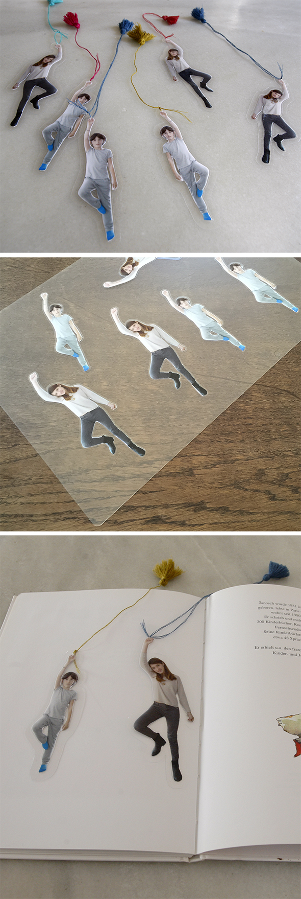

A bookmark to be accompanied by your beloved. Photograph the person you want to be on the bookmark with one or both hands up. Cut out the person as best as you can and laminate the photo. Again you cut it out with a few millimeters away from the picture and put a thread (to the thread you can add a pom pom or tassel.)Fantastic idea of the blog of nearly crafty of Kate! Thanks for the inspiration.
nearly crafty
